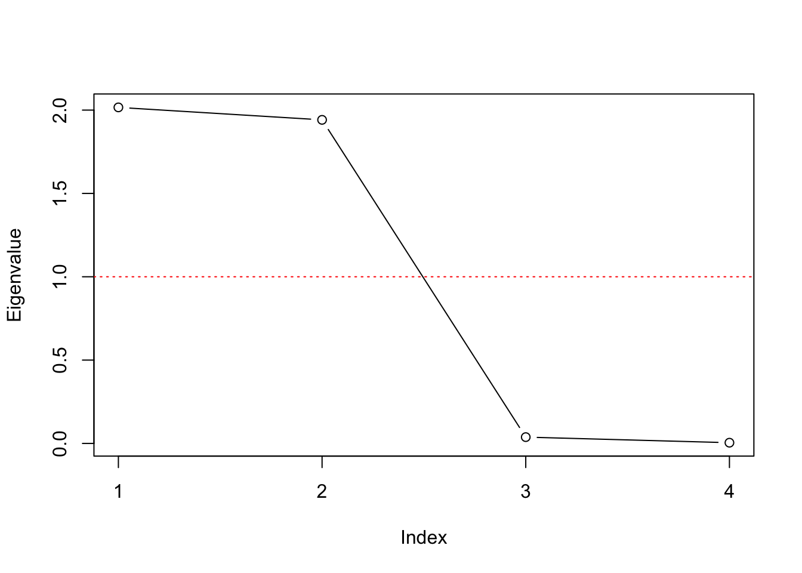

Chapter 3 Factor Analysis
3.1 Foundations
3.2 Implementation
3.3 Basic Example
ski <- data.frame(skiers = paste0("S", c(1:5)),
cost = c(32, 61, 59, 36, 62),
lift = c(64, 37, 40, 62, 46),
depth = c(65, 62, 45, 34, 43),
powder = c(67, 65, 43, 35, 40))R <- cor(ski[ ,-1]) # Calculating correlation Matrix
V <- eigen(R)$values # Calculating eigenvalues
V## [1] 2.016305104 1.941513814 0.037812306 0.004368776Manual Scree plot
#Screeplot
plot(V, type = "b", ylab = "Eigenvalue", xlab="Index", xaxt="n")
axis(1, at=1:length(V))
abline(h=1, lty = "dotted", col="red")